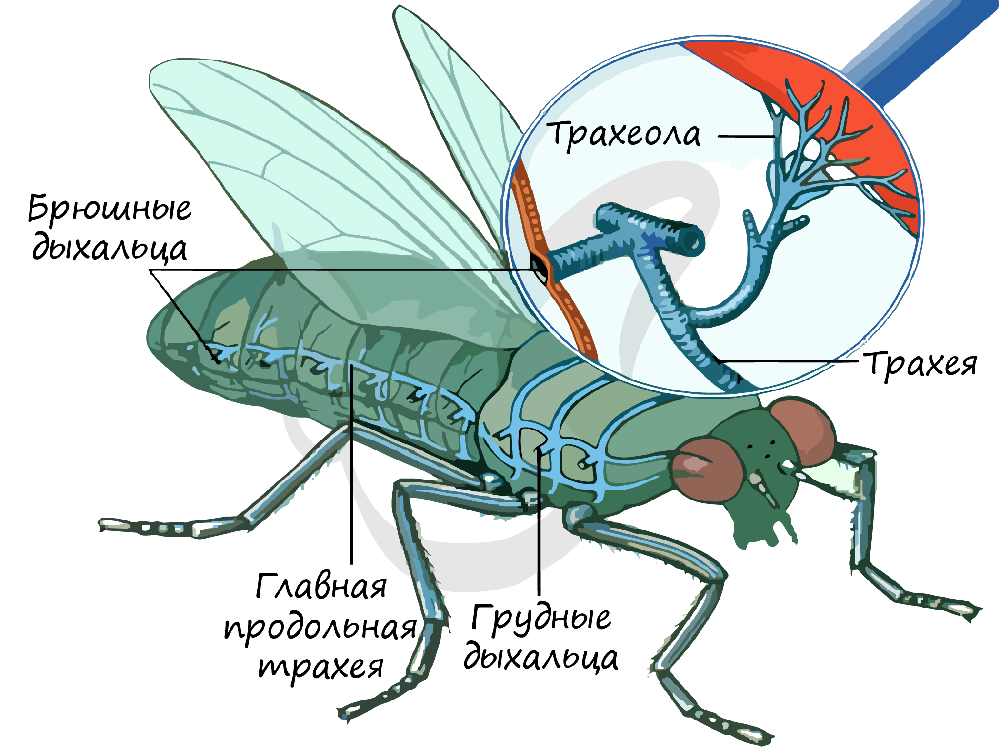

Дополнительные органы
Слюнные железы
Cмачивают пищу, могут выделять ферменты или ядовитые вещества.

Симбиотические микроорганизмы
Симбиотические микроорганизмы — участвуют в переваривании растительной пищи (у некоторых видов). Пищеварительная система обеспечивает рост, развитие и выживание насекомых, отражая их приспособленность к различным условиям среды и источникам пищи.

Дыхательная система
Насекомые дышат с помощью трахейной системы, которая обеспечивает прямую доставку кислорода к органам и тканям, минуя кровеносную систему.
Строение дыхательной системы:
Дыхальца (стигмы) — отверстия на боках грудных и брюшных сегментов тела
Трахеи — разветвлённые трубочки, выстланные хитином
Трахеолы — мельчайшие ответвления трахей, контактирующие с клетками
Механизм дыхания:
Воздух поступает через дыхальца, по трахеям и трахеолам кислород доставляется непосредственно к тканям. Удаление углекислого газа происходит тем же путём.
Дыхание может усиливаться за счёт движений брюшка.
Особенности дыхания насекомых
1) Кровеносная система не участвует в переносе кислорода
2) Высокая эффективность газообмена
3) Экономия воды (дыхальца могут закрываться)
4) Приспособленность к наземному образу жизни.

Кровеносная система
Кровеносная система насекомых незамкнутая, выполняет перенос питательных веществ, гормонов и продуктов обмена, но не участвует в доставке кислорода — за дыхание отвечает трахейная система.
Строение кровеносной системы
Сердце - продольный спинной сосуд, разделённый на камеры с клапанами,
проталкивает гемолимфу вперёд по телу
Аорта - продолжение сердца в переднюю часть тела; обеспечивает движение гемолимфы к головным органам.
Гемолимфа - жидкость, аналогичная крови; переносит питательные вещества, гормоны, продукты обмена, участвует в иммунной защите,
не переносит кислород.
Механизм движения гемолимфы
движение обеспечивается сердцем, мышцами тела и дыхательной активностью;
жидкость циркулирует в полости тела, омывая внутренние органы.
Значение:
обеспечивает питание клеток и органов;
участвует в терморегуляции и иммунной защите;
позволяет насекомым сохранять активность при высоком уровне метаболизма.

Нервная система
Нервная система насекомых обеспечивает связь организма с окружающей средой, координацию движений и регуляцию работы внутренних органов.
Нервная система имеет узловой (ганглионарный) тип и состоит из:
Центральная нервная система
Надглоточный ганглий (мозг) - регулирует деятельность органов чувств и сложные формы поведения
Подглоточный ганглий - контролирует движения ротовых частей и передних конечностей
Грудные и брюшные ганглии - управляют движениями тела и конечностей
Периферическая нервная система
нервы, отходящие от ганглиев,
связывает центральную нервную систему с органами и мышцами.
Висцеральная (вегетативная) нервная система - регулирует работу внутренних органов и гладкой мускулатуры. Висцеральная (вегетативная) нервная система

Висцеральная (вегетативная) нервная система
Мальпигиевы сосуды
- тонкие трубочки, впадающие в задний отдел кишечника;
- погружены в полость тела и омываются гемолимфой;
- основной орган выделения.
Жировое тело (задняя кишка)
- участвует в обратном всасывании воды и солей;
- способствует образованию сухих экскрементов.
Механизм выделения
продукты обмена (в основном мочевая кислота) поступают из гемолимфы в мальпигиевы сосуды;
далее они попадают в кишечник и выводятся наружу вместе с каловыми массами;
вода частично возвращается в организм.